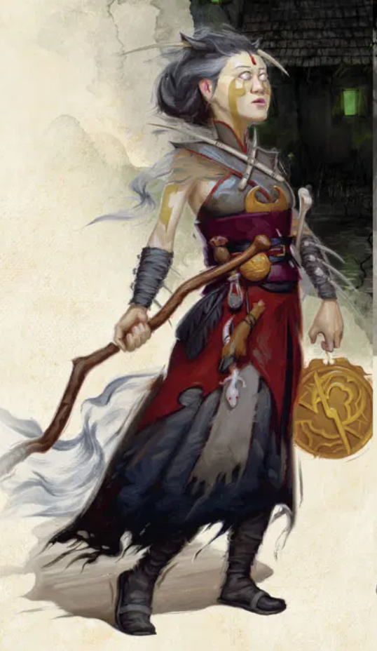

The 'official' D&D class ranking.
It isn't actually official, don't tell anyone.
If you want to create a character, I highly recommend DnD Beyond.
My rankings:
- Cleric
- Rogue
- Warlock
- Bard
- Fighter
- Paladin
- Sorcerer
- Artificer
- Druid
- Barbarian
- Ranger
- Wizard
- Monk
1. Cleric

While the Cleric is generally seen as the healer of the party, it is one of the best classes overall. Not only can they heal, and pretty well at that, they also are one of the most powerful damaging classes. They can fill almost any role, with a large variety of subclasses, which are picked at first level, that all feel different and unique while filling out different roles in the party. Overall, Cleric is a jack of all trades, master of all.
2. Rogue

Rogues are powerful. They are the best class in the game for skills, they do some of the most single-hit damage in the game CONSISTENTLY, and they have a standard amount of health--Not even a weakness! They also aren't weak at range, and are even better at range than in melee, which they are very good at. With them only needing one stat, Dexterity, that stat being the best stat in the game, and them having the second-most Ability Score Improvements in the game, they can also get a TON of feats that makes the Rogue extremly powerful. However, they do have one weakness: They don't get good spellcasting capabilities, but they do make up for that with a lot of utility from skills. However, at higher levels, the linear scaling of their damage doesn't keep up with the exponential scaling of spellcasters.
3. Warlock

Warlocks are often thought of as being the class that struggles with lack of resources. However, they are actually the class that can keep their resources going throughout the entire day, with their unlimited invocations, the powerful buffs to the eldritch blast cantrip, and them recharging their spell slots on a short rest. In addition, they are by far the most versatile class in the game, with their invocations covering almost every playstyle and doing it well. They are the best class for being a martial spellcaster, can be the class with the most ranged options, be one of the highest damaging classes, be one of the sneakiest classes, and even do a large amount of damage every turn.
4. Bard

Bards are one of the most versatile classes, as well as being one of the best spellcasting classes. if you want to take spirit guardians and counterspell, they are the only class that can do so without multiclassing. It its spell list is quite expansive on its own, and the ability to take any spell from any list allows for many spell combos that are extremly powerful. In addition, the base class is very good, with a large amount of subclasses varying in uses. They are also the best class for skill monkeys.
5. Fighter

6. Paladin

7. Sorcerer

9. Druid

🦅
10. Barbarian

11. Ranger

12. Wizard

13. Monk

| Class |
Pros |
Cons |
| Artificer |
- Large amount of versatilty
- Can take advantage of more magic items than other classes
|
- Infusions are very limited
- Half of the subclasses aren't useful or viable
|
| Barbarian |
|
|
| Bard |
|
|
| Cleric |
|
|
| Druid |
|
|
| Fighter |
|
|
| Monk |
|
|
| Paladin |
|
|
| Ranger |
|
|
| Rogue |
|
|
| Sorcerer |
|
|
| Warlock |
|
|
| Wizard |
|
|
Also cute cat video that is related to D&D because tabaxi